Build production-grade LLM code generation pipelines using OpenCode's native skill + subagent + command system. No custom agent framework required — just OpenCode and your deterministic scripts.
/fix-tests, /fuse-module, /build-module
| Layer | Location | Purpose |
|---|---|---|
| Skill | .opencode/skills/ | Methodology (what to do, how to diagnose) |
| Subagent | .opencode/agent/ | Permission sandbox + model config |
| Command | .opencode/command/ | User-facing trigger |
pipeline-master — Orchestrator: chains stages in orderpipeline-test-fix — Diagnose pytest failures, fix code, verifypipeline-fusion — Read reference code, generate business logicpipeline-build — Enhance CRUD skeleton with validation guardspipeline-behavior-fix — Compare against reference, patch missing logicpipeline-fe-infra — Generate Vue3+Element-Plus admin scaffoldingpipeline-fe-page — Fill empty Vue templates with data tablespipeline-fe-ir — Compile business rules into structured test IRpipeline-rule-extract — Extract common business rulespipeline-rule-convert — Add testable acceptance criteriapipeline-rule-review — Check rules for duplicates, contradictions# Step 1: Generate CRUD skeleton (deterministic)
python scaffold.py user
# Step 2: Run CRUD tests (should pass)
python -m pytest tests/test_user.py::TestCRUD -q
# Step 3: Open opencode, then type:
# /fuse-module userVery high relevance — Shows how to build pipelines with OpenCode's native primitives.
cloned-repos/opencode-pipeline-template/